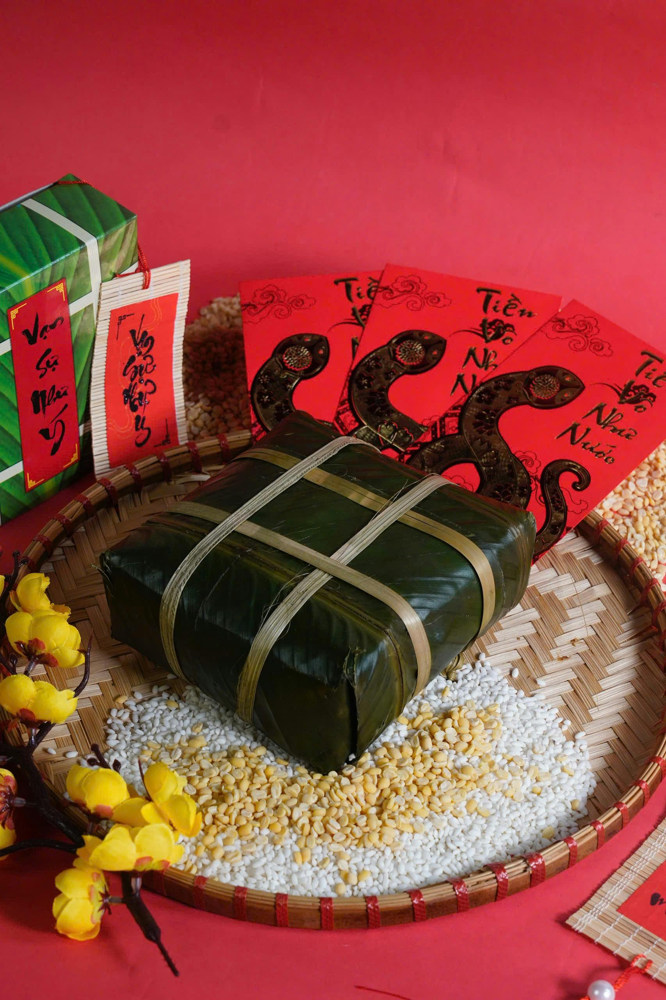
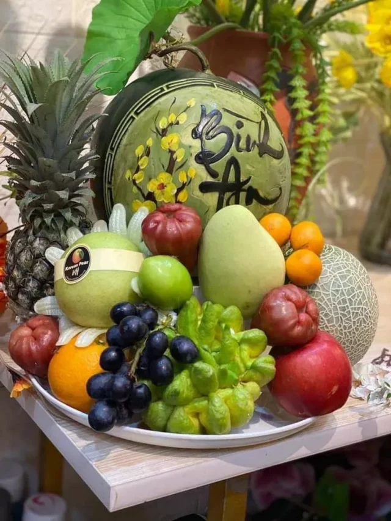

Chào Mừng Tết Nguyên Đán
Tết Nguyên Đán là lễ hội truyền thống lớn nhất trong năm của người Việt. Đây là dịp để gia đình đoàn tụ, tạ ơn tổ tiên và cùng nhau đón chào một năm mới an khang, thịnh vượng với sắc đỏ của câu đối và sắc vàng của hoa Mai.

Các Phong Tục Đặc Trưng

Gói Bánh Chưng
Món ăn truyền thống không thể thiếu trên mâm cỗ cúng tổ tiên, tượng trưng cho Đất trời hòa hợp.
Mừng Tuổi (Lì Xì)
Trao nhau những phong bao đỏ rực rỡ mang ý nghĩa lấy may, cầu chúc sức khỏe và bình an.
Chơi Hoa Tết
Hoa Đào ở miền Bắc và Hoa Mai ở miền Nam tung cánh báo hiệu một mùa xuân ấm áp đang về.
Hương Vị Ẩm Thực Tết

Mâm Ngũ Quả
Thể hiện ước nguyện của gia chủ về một năm mới sung túc, bình an qua từng loại quả.
Thịt Kho / Giò Lụa
Những món ăn đậm đà hương vị gia đình, luôn có mặt trong bữa cơm đoàn tụ ngày xuân.

Dưa Hành, Củ Kiệu
Vị chua chua, giòn giòn giúp chống ngán hiệu quả, là "linh hồn" ăn kèm không thể thiếu.
Lịch Trình Đón Tết
Tiễn Ông Công Ông Táo
Gia đình dọn dẹp bếp núc, làm mâm cơm cúng và thả cá chép để tiễn Táo Quân về trời.
Đón Khúc Giao Mùa
Cả nhà quây quần bên bữa cơm Tất niên. Đúng 12h đêm làm lễ cúng Giao thừa đón năm mới.
Xuất Hành & Chúc Tết
Mùng 1 tết Cha, Mùng 2 tết Mẹ, Mùng 3 tết Thầy. Mọi người mặc đồ đẹp, đi chùa và chúc Tết.
Giai Điệu Mùa Xuân
Cùng lắng nghe giai điệu rộn ràng của mùa xuân.